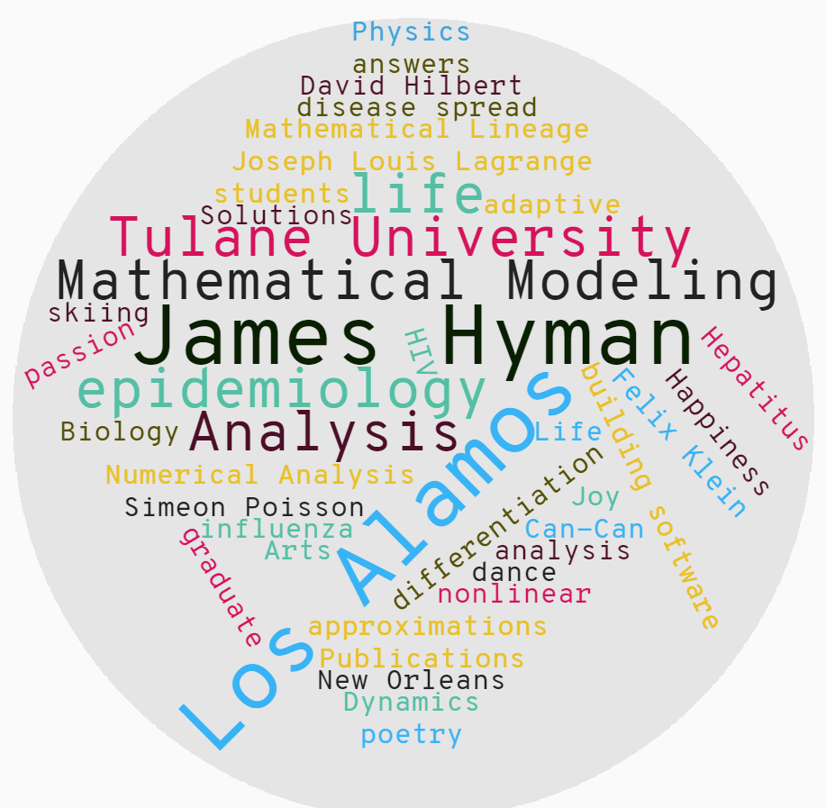

Dr. James (Mac) Hyman
Tulane University
Department of Mathematics
6823 St. Charles Ave
New Orleans, LA 70118
Phone: +1.504.685-3433
Fax: +1.504-865-5063
Email: mhyman@tulane.edu
Hyperlinks:
Tulane School of Medicine
Tulane School of Science and Engineering
Tulane Math Modeling Lab
Los Alamos National Laboratory
My research interests include building a solid mathematical foundation for difference approximations to partial differential equations and using mathematical models to better understand and predict the spread of epidemics. Most of my publications are in mathematical modeling and I have passion for writing quality software for numerical differentiation, interface tracking, adaptive grid generation, and the iterative solutions of nonlinear systems. I organize and manage a program for graduate students in mathematical modeling and analysis at Los Alamos.
This short biography was written after an interview for an article in Esquire in 1984. Most of the article remains close enough to being true that it gives an accurate picture of how I try to live my life.
Mac Hyman is a computational scientist who bridges the gap between mathematical models that describe scientific and engineering problems their approximate solution on the computer. The main thrust of research is to improve the reliability, accuracy and availability of computer approximations. This, in turn, enhances the effectiveness and judgement of scientists and engineers in making design decisions and reduces the amount of expensive laboratory and field testing.
He was born in a small town in central Florida the first day of spring 1950 and grew up among the orange groves, phosphate mines and cattle ranches. He was an Eagle scout, has always been an avid camper, photographer, and though no records exist (he never got caught) had a happy adventurous childhood.
In school, it was fated early on that he was to become a mathematician. He couldn't spell, had terrible trouble memorizing facts and dates, but he found mathematics easy because "you only need to understand a few simple relationships and everything else can be derived from them." This tendency to do what came easy was reinforced by the joy of discovering new relationships and their implications. He was ten when he made the decision to become a mathematician.
He studied math and physics at Tulane University on an Air Force scholarship and all went smoothly until he met his first computer in 1969. The computer offered the opportunity to visualize the solutions of nonlinear equations he had previously considered intractable. The computer became as valuable as calculus had been in expanding his understanding. The mold was set, and he became a numerical analyst and strived to obtain an equal balance in his studies of physics, math, and computer science. In 1972 he graduated from Tulane with honors in math and physics and received the Glendy Burke mathematics medal for undergraduate studies.
The Hertz Foundation provided the money and Peter Lax, his advisor, the guidance in his graduate studies at the Courant Institute. At Courant he cultivated a theoretical background in the same three disciplines and received his Ph.D. in Mathematics in 1976. Lax worked in Los Alamos during the war and encouraged him round out his training in an applied research program there.
His science blended well with the technical climbing and skiing available in Los Alamos. When on a mountain, as emersed in a calculation, he becomes a part of it - totally absorbed in what he's doing. The ski slopes are 15 minutes from his office and (in a good year) he is on the slopes 40-50 days a year - skiing fast, often out of control (some say wild), with a little bit of style and a lot of enthusiasm. A close friend characterized him by "he skis like he does mathematics." The statement works both ways.
His long term research goal is to unify and simplify the theory and implementation of algorithms for the numerical solution of partial differential equations. These equations are the crucial element of most computer codes modeling physics. One future application will be construction of an artificial intelligence or expert computer system that will automatically generate a computer code approximating the solution to mathematical models for, say, oil flow in a reservoir, laser fusion or the weather. The user will need only to describe the model in a standard mathematical language; the expert systems will then dynamically build the appropriate comptuer code, solve these equations, and analyse the results. His first prototype code developed along these lines, MOL1D (written in 1975), was one of the first packages for the automatic solution of these equations.
The code is still widely used in scientific computing laboratories and university departments throughout the world and has been applied to complicated problems in combustion, climate and weather models, economic forecasting, plasma physics, atmospheric and water pollution, and the pattern formation of chicken feathers on an embryo. Currently, he is working with Martin Staley to design and implement a more powerful C++ interactive problem solving environment for solving PDEs.
His research is highly interdisciplinary and he has written over a dozen computer codes and published over a hundred research papers in fields including: shock waves, soliton theory, restoring blurred pictures, adaptive numerical methods, significance arithmetic, and structured software design.
He is a member of the various proper scientific societies with Greek letters and strongly promotes interactions between the national laboratories, industry, and universities. To this end he has supported and helped create the Center for Nonlinear Studies at Los Alamos. He continues to work closely with the Center by organizing workshops and coordinating their summer graduate student research program. As group leader of the Mathematical Modeling and Analysis group, he strives to maintain a close ties between the Laboratory research an Academia.
For a few details on how he ended up living a life of mathematics, dance, poetry, and skiing on top of a mountain in the middle of New Mexico click for an unauthorized (but mostly factual) biography written for an Esquire article many many years ago. The real details on his life can be found in his answers to the list of questions or in the short vita he prepared for the Can-Can in the Los Alamos Melodrama or scattered through the Los Alamos Arts Calendar. If you visit and are looking for things to do in Los Alamos, then check out Wikitravel and Virtual Los Alamos.
I am one of 54 siblings descended from Peter Lax. I am a Kleinian through Hilbert. Going back further, one can argue with somewhat less certainty that I am a Lagrangian through Klein. Tracing backwards, my lineage is
* Remarkably, Felix Klein seems to have been the sole habilitation student of each of his two advisors:
Mac has been dancing through life, occasionally to music and sometimes even on stage.
He was born and raised in the south, and spent his college years in New Orleans and New York City where he managed to stay alive long enough to escape to New Mexico a quarter century ago.
For the past ten years he has been studying with Christen Howell's Oxymoron dancers and appreciates her patience and the joy for dance she shares with her students.
Dancing in the Can-Can line at the Melodrama seems to him like the most natural way in the world to start the new millennium.
Type casting? Maybe ...